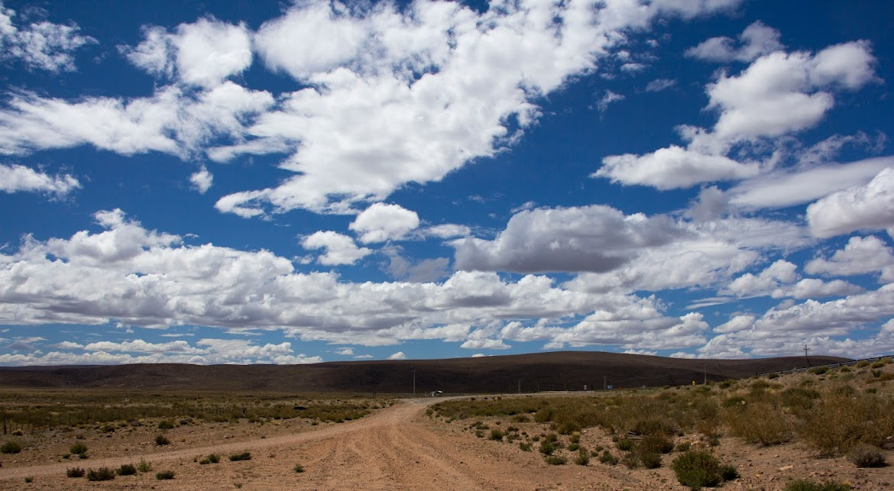

Educación que transforma vidas rurales
¿Quiénes somos?
En Cruzada Patagónica, transformamos vidas a través de la construcción y gestión de escuelas rurales. Cada escuela es un espacio de aprendizaje, innovación y comunidad.
Actualmente gestionamos tres escuelas secundarias agrotécnicas gratuitas con residencias estudiantiles en las provincias de Neuquén, Chubut y Río Negro, brindando educación integral a jóvenes de parajes rurales.
¿Qué desafíos enfrentamos?
En Argentina, 1 de cada 4 jóvenes de áreas rurales no tiene acceso a la educación secundaria. Las distancias, la falta de recursos y la ausencia de infraestructura son barreras que perpetúan la desigualdad. Cruzada Patagónica trabaja para derribar estos obstáculos, construyendo un futuro donde todos tengan acceso a la educación.”
¿Cómo podés ayudar?
APADRINA A UN ESTUDIANTE
1 de cada 4 jóvenes no puede acceder a la educación por diferentes motivos, sea económico o por trabajo. Con un aporte de $70.000 nos ayudarías a brindar los materiales y herramientas necesarias para que puedan aprender y educarse, así como espacios acogedores donde puedan soltarse y crecer. ¡Sé parte del cambio!
SUMATE COMO AMIGO DE LA CRUZADA
La educación transforma vidas, las cambia y las potencia a averiguar más de ella. Sumate como amigo de la cruzada y apoyá nuestros proyectos educativos donando materiales de estudio. Cada aporte, sea pequeño o grande, hace la diferencia.
DONACIÓN POR ÚNICA VEZ
"Cada aporte cuenta, por pequeño o grande que sea, nos ayuda a seguir adelante porque nos dice que las personas creen en los chicos y en la educación que puede cambiar sus vidas. Pueden ser el motor de alguien para su educación."